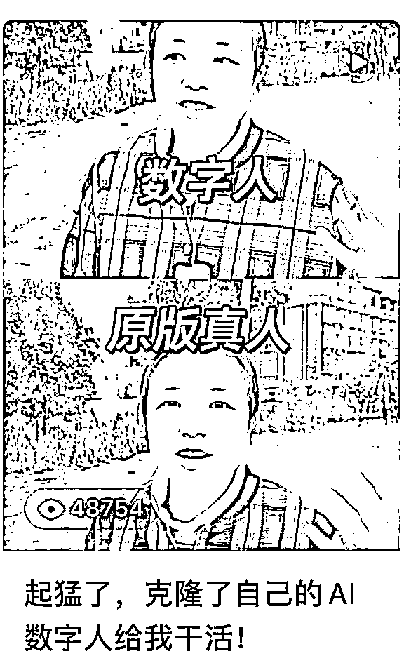

来源：https://vow6kdbiak.feishu.cn/docx/OuJOd32a1oMjnexjWa0cmKjynfd
这条内容主要是用数字人带货口播做批量剪辑的相关问题
是针对剪辑的复盘干货，数字人带货后面再出详细内容
这次测试的有抖音、快手、小红书、视频号、b站、得物
除了快手，其他截图如下：
因为快手我内容水土不服，不知道原因，每个都是几十播放~
对于矩阵、混剪、二创、洗稿，这可能是互联网常玩的路子，但是对我这样传统自媒体人是很难的
先说一下这篇文章在大佬看来真的太普通，小卡拉米，但是这是裸辞后的自己一次大进步！
如果你和我当初一样，可以继续往下看，如果你已经入行，请直接跳转下一章节！
俄罗斯数字人带货，这是代替自己出镜，讲解产品，从而变现
这对于之前做自己的IP，自己出镜、自己口播、必须原创的我来说，是非常大的挑战和跨越！去年我老公给我说做个克隆人代替我的时候，我是嗤之以鼻的，觉得拿个玩具人（假人）太儿戏，太敷衍，所以我一直不关心AI，不听他说的科技之潮！
之前每条视频都是单条视频认真剪辑、不敢多弄账号，担心有粉丝看到一鱼多吃丢人，担心他们觉得说看到这条内容“似曾相识”。所以一个主题、一个话题，我基本就讲一次，从没想过n个账号做自己的矩阵。用“粉丝”的话来说，就是“你现在吃相难看”“你变了”“我要取关你”
所以，这一次的测试，真的是一个很大的挑战！
我想说！感谢科技！感谢自己去跨越心理洁癖！哈哈哈！真香！
我们当时做有以下变现路径，哪怕这波不赚钱，只要先入局，肯定有机会！
小红书1000粉可以挂“买手”的选品，不用自己囤货，笔记是什么左下角就带什么品；
抖音、快手、视频号也同样能同步，做带货，左下角放链接，收入就是卖出后的利润提成；
目前我们知道的俄罗斯数字人带货头部是2个月400w~
如果自己有货或者无货源代发，只要有品，在这些平台都能自己开店。价格可以自己定，自己发货，填写单号，这就是我们常说的电商！
目前是b站视频号都有视频激励，每天大概是7元左右
每个项目都离不开收徒，我们在账号都留了自己地球号，非常精准。由于这项目需要较干净的魔法、注册账号，交付有点麻烦，后面很多要学的都推了，有课程、有文字版，轻交付，但是问题还是比较多~
这次的实验，从上手到稍微熟练操作是2天左右，一天作品发布至少10条，6个平台，对自己来说目前的结果其实还是比较满意的！正反馈来得特别快！
一般来说，小白上手做互联网项目，知道抖音、小红书什么的都能赚钱，但是实在找不到任何方向，交了一次又一次钱，拍摄了好几天，播放量都不破百，所以这次的测试，让我觉得正反馈对小白来说是极大的鼓励！
这是我第一次做混剪二创，之前一直坚持”ip“”必须自己出镜““必须原创”的原则；这一次的测试感觉打开了互联网新大门，并且节省了很多时间，产量也增加至少10倍！
之前我做ip，一周2条视频素材，写文案、录制、忘词、修改、情绪、状态、录制环境等等都会考虑；这一次我做了自己的数字人拍摄，也做了外国数字人带货，都有不错的反馈。

所谓“二创视频”就是在原素材的基础上进行二次创作，重新塑造人物、重构时间线、重新定义作品主题
简而言之就是对素材进行二次加工、剪辑
跟着大趋势走准没错，如果平台都在限流那做了就没意义
左图是抖音宣传的“二创”并且会给巨大流量，说明官方是同意的，甚至鼓励
右边图片能点击打开，是剪映的“镜头分割”，这个是专门针对二创出的功能
因为这个功能的意义在于，让你更好拆解素材的分镜头，后面会有详细内容
这条内容是测试踩红线，两条文案内容一模一样，右边先发，左边后发
看到数据赞比还不错，所以发了第二条，什么都没变，只是加了一层滤镜
数据不算差，这就是“一点点小小改变”挑战后端审核红线
最近数字人账号，测试的是同样表情、就是一条素材加了不同文案和标题，成为了新的内容
建议看完再看后面的，没有基础较难看明白
链接: https://pan.baidu.com/s/1058j_-Cj3FWGN9U1bwp1Uw?pwd=v7j5 提取码: v7j5
其中素材需要：
主轨道素材：最下面那条，内容是随机匹配的，这个是最重要的部分！
人物素材：出镜人物口播
其余素材：上面几排可放贴纸、文案标题、水印、音乐、边框等~
批量剪辑的核心：
纯自己观点，但是秉着这条观点，发布的不同账号都没限流，没收到相似、抄袭、低原创警告
最底层的基础视频很重要，找素材、切割画面、随机拼接转换、镜像、放大或缩小，那他们随机组合后，放在主轨道，我再加上其他素材，这样是不是也是原创了？
剪映自带的智能镜头分割，选中需要切割的画面，点击右键就能切割
好处是方便，但是不能分段保存到不同文件夹，不太方便，听说“鬼手”也很好用，可以试试
后面有剪映的解决方法
切割的方法是按照镜头切换来自动切的，我这个视频一个镜头在2s内，如果你的视频在30s以内，2s镜头转换时比较合适的，这个得配上你文案内容、时间长短才知道多少秒适合！到时候再加长或者缩短都是可以的！
左边已经切过，比较细碎，右边有的没被切割，就相对比较大块
按照前面我们说的，要给他打乱顺序、随机调换位置，那是不是更加面目全非的，但是主题都是一致的，那我们是不是就呈现出能复刻无数基础不相同的原创素材？
而且下面的素材没那么重要，重要的是人物、文案、字幕！
前面说到剪映比较难保存切割后的细碎视频，所以可以用下面这种方式
比如我是做俄罗斯方向，剪辑不同的分割内容可以打开不同的原文件。把俄罗斯风景、是紫皮糖、蜂蜜、国内风景等，都可以分成不同的剪辑文件，要做视频的时候，选择不同的文件即可，基本反复用的也就是那些素材
但是有一点要注意，最好一周左右换一下顺序、调整新素材
找素材比剪辑、发布重要得多！
方式：拼多多买无版权文件、抖音b站找非官方视频
你刷同类视频刷多了，就有种感觉，全是重复素材、抄的、各种洗！那这种一般没问题，直接下载视频
抖音优先选择点赞高的，这是市场认可的内容
工具：江湖工具箱、轻抖
如果上面的已经明白逻辑，那试试批量剪辑！
把除了基础素材的内容复制粘贴到轨道上，红色框定的地方，多少份随你！如果比较多，最好做一个1、2、3的标记，谨防自己导出弄混
那么目前下图的内容，基础轨道是不同的，但红色框内的素材是一样的
为了避免重复，我们现在对上面的内容进行去重处理
可以对口播视频进行镜像处理
可以用修改口播、基础素材画面的方法去重
1、横屏转竖屏
横屏的视频，可以做成9：16模板，添加画中画的方法
口播是横屏，基础素材是竖屏，可以用画中画方式
2、拉大横屏视频
不一定非要把横屏放中间，可以放在任何合适的位置，改变人物位置以去重~
把人物完全扣出来，用基础素材的背景或者重新加背景都可
在话题转变、画面切换的间隔，可加入转场特效，增加视频可看性

搬运来的视频，一般都有原来的BGM，把轨道声音关闭（左图）
背景音乐可以在你的配音不够好的情况下起到一个很好的作用
在使用BGM时，记得调整音量、高潮部分、分段间隔等~
等剪辑技术提高后，可以自己加音乐
首先我们要了解音乐的风格，一般来说，我们习惯性的找一些比较热门的音乐，但是每次都是这几首歌，都听腻了，感觉全世界都在用这首歌。
我们要有自己总结音乐和定位音乐的能力，不同的音乐要用到什么场景下，不同的音乐要用到不同的片子当中去，而且一个视频中，我们可能用到不止一首音乐。
简单方式，就看原本爆款视频用的什么，咱们就用什么
增加他们看下去的欲望，很多人不看字幕都不知道在说什么，能突出重点
注意一点，如果主轨道删除移动内容，上面文字轨道也会随之删除，所以在删除之前点击左边的锁定键！
当我们一层一层批量剪辑完成后，用键盘上的I和O，选择区域，能分区域、分段导出~
选定的区域是会被导出的，灰色是未选择的
做矩阵的都有众多的手机和电脑，mac和windows的传输可用localsend这个软件操作
一个30s的视频，基本是3s传输完毕，而且无损~
那目前我们已经下载完视频，要分发平台了
用过蚁小二、推兔，觉得前者针对免费用户更友好~一天能发5个账号、免费5次，推兔只有一次机会
具体操作可看：
这个就是最近做的批量剪辑内容，如果是口播出镜文案是固定的，换基础素材是第一步，再调整其他内容、添加特效、贴纸、画中画等，都是去重的方法！
这次的项目，有段话放在了自己视频里：盲目的努力，是自我标榜的辛苦，并不值得鼓励和赞扬！这次也让我从怀疑到接受、到成为AI受益者、到相信这个新时代正敲锣打鼓地到来了！鄙弃并无意义，因为科技会推动者所有人往前，哪怕你从不信任他！